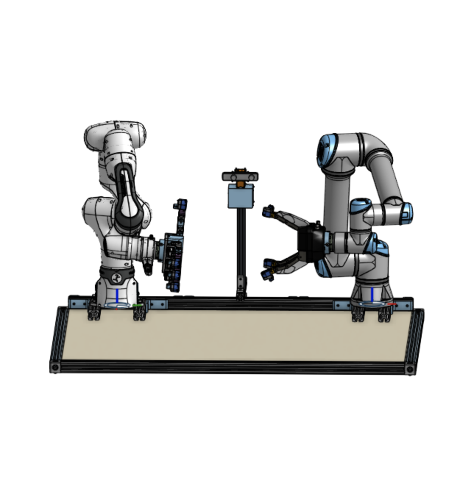

Bimanual Teleoperation
PhD project - Human Factors Institute
Project Description
The Office of Naval Research funded a multi-institutional collaboration between UCLA, Case Western Reserve University, and Cleveland State University entitled "Embodied Robotics". The goal of the project and collaboration is to create a teleoperated bimanual robotic system which can be operated by a user in virtual reality and across large physical distances. The system (seen in CAD to the right) consists of a dominant arm - a redundant Franka Emika FR3 manipulator outfitted with a LEAP hand - and a non dominant Universal Robots UR5e manipulator outfitted with a Robotiq 3-finger gripper.
I was tabbed to be the controls team lead in charge of creating the robot controller which takes in hand pose inputs from the VR headset and commands robot joint velocities.

Determining and Meeting Requirements
The controller had to meet three main requirements:
- Avoid kinematic singularities
- Be capable of "palm up" and "palm down" hand configurations
- Be fast enough to keep up with human movements
The controller I developed is an optimization based controller
Take a look at the demo below! The top left video is an external video feed, the bottom left video is the operator view in VR and the right video is an external view of the operator in the system.